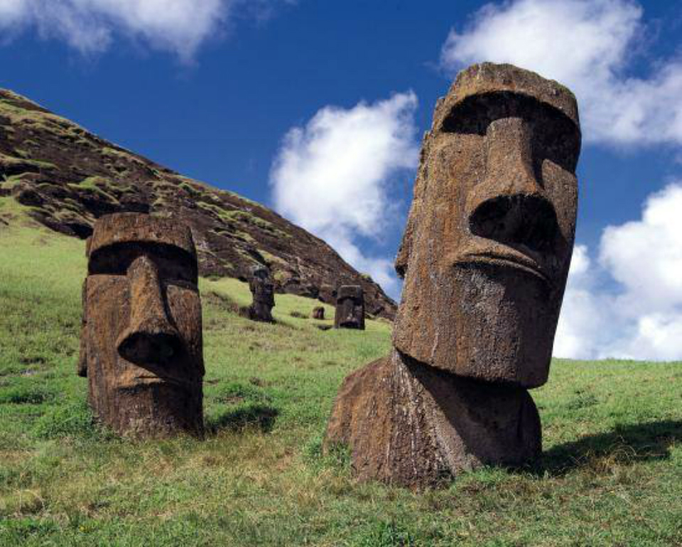
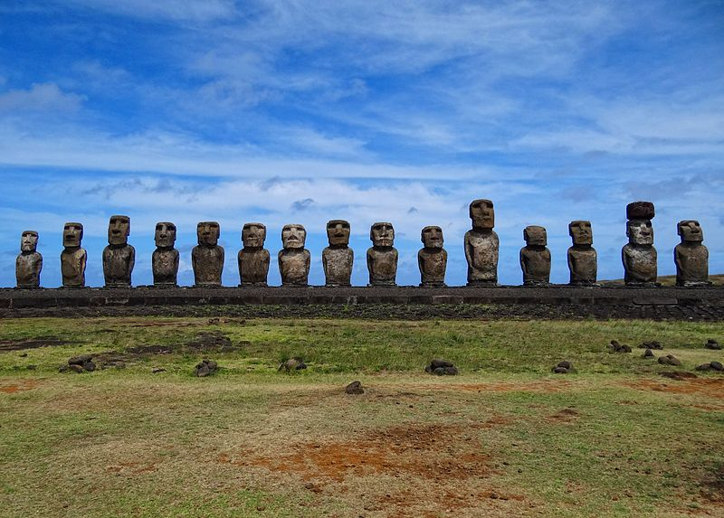

Tényleg van testük a Húsvét-sziget legendás szobrainak?
A Csendes-óceán délkeleti részén fekvő Húsvét-sziget csupa rejtély. Nem csak a híres moai szobrok létezésre nincs egyelőre magyarázat, de arra sem, hogyan kerültek oda egyáltalán emberek. A legközelebbi kontinentális part, vagyis Chile 3700 kilométerre van a szigettől, a másik oldalon Új-Zéland közel 16 ezerre, de a legközelebbi lakott szigetig is több mint kétezer kilométert kell utazni.
A régészeti leletek alapján, a Húsvét-szigetet valamikor időszámításunk szerint 700 és 1100 között népesítették be, polinéz, vagyis a sokkal távolabbi vidéken honos emberek. Nem biztos persze, hogy onnan jöttek, de azokkal a könnyű evezőshajókkal, amiket akkoriban használtak, még ezer kilométer legyőzése is lehetetlen küldetésnek tűnik, nemhogy négy-, pláne tizenhatezeré.
De nézzük a 163 négyzetkilométeres, vagyis durván egynegyed Budapest területű sziget 887 monolitját. Mind a parton, vagy a parthoz közel állnak, és tengert nézik, mintha várnának valakire a víz felől. Nagyjából 400 év alatt, 1100 és 1500 készültek el, a legnagyobb, „Paro” nevű fej tíz méternél is magasabb, és nyolcvan tonnát nyom. Készült egy ennél is hatalmasabb, 21 méteres, 270 tonnás szobor is, de félbehagyták, amikor az 1600-as években a sziget 15 ezer fős népessége, eddig ismeretlen okból, hirtelen 2-3 ezer főre csökkent.
Már az is nehezen felfogható, hogyan volt képes ezeket megalkotni az kor európai népeihez képest fejletlen Rapa Nui civilizáció, úgy hogy közben ellátta önmagát. Időről-időre, azonban még ennél is fantasztikusabb teljesítményt sejtető képek keringenek a neten, amik a grandiózus fejeket csupán „a jéghegy csúcsaiként” ábrázolják. De valóban nyakig beásott, egész alakos szobrokról van szó, vagy az egész csak a fantázia szüleménye?
Talán meglepő, de valóban az összes moainak van teste is, és ezzel a tudományos élet már 1914 óta tisztában van. A legtöbb félreértést az okozza, hogy a legtöbben csak a nyakig beásott maoikat ismerik, hiszen messze ezek a legnépszerűbbek a fotósok körében. Valójában a szobrok túlnyomó többsége mindig is teljes alakban látható volt, csak 150 van közülük valamiért beásva. Ennek, illetve az interneten annyira népszerű összeesküvés-elméleteknek köszönhető, hogy amikor a szobrok feltárásával foglalkozó szervezet, az Easter Island Statue Project (EISP) ásatásain készült képek megjelennek, sokan azonnal átverésre gyanakodnak.